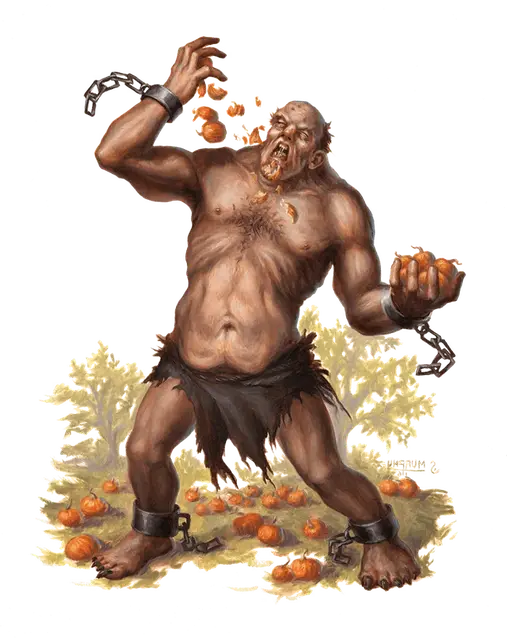

Пасть Гролантора
Mouth of Grolantor
Огромный Великан (Холмовой великан), обычно хаотично-злой

Класс Доспеха 14 (природный доспех)
Хиты 105 (10к12 + 40)
Скорость 50 футов
| мод | спас | ||
|---|---|---|---|
| СИЛ | 21 | +5 | +5 |
| ЛОВ | 10 | +0 | +0 |
| ТЕЛ | 18 | +4 | +4 |
| мод | спас | ||
|---|---|---|---|
| ИНТ | 5 | −3 | −3 |
| МДР | 7 | −2 | −2 |
| ХАР | 5 | −3 | −3 |
Навыки Восприятие +1
Иммунитет к состояниям испуг
Чувства пассивное Восприятие 11
Языки Великаний
Опасность 6 (2300 опыта)
Бонус мастерства +3
Среда обитания Луг, Холмы
Особенности
Пасть безумия. Великан имеет иммунитет к заклинанию смятение [confusion] и похожей магии.
В каждый свой ход великан использует все свое движение, чтобы подойти к ближайшему существу или тому, что он считает едой. Бросьте к10 в начале каждого хода великана, чтобы определить курс его действий в этом ходу:
• 1–3. Великан совершает три атаки кулаками по одной случайной цели в области досягаемости. Если в досягаемости нет существ, то он впадает в ярость и получает преимущество на все броски атаки до конца своего следующего хода.
• 4–5. Великан совершает по одной атаке кулаком по каждому существу в области досягаемости. Если рядом никого нет, то великан совершает одну атаку кулаком по себе.
• 6–7. Великан совершает одну атаку укусом по одной случайной цели в области досягаемости. Если таких существ нет, то его глаза стекленеют и он становится ошеломленным до начала своего следующего хода.
• 8–10. Великан совершает три атаки по одной случайной цели в области досягаемости: одну укусом и две кулаками. Если в досягаемости нет существ, то он впадает в ярость и получает преимущество на все броски атаки до конца своего следующего хода.
Действия
Укус. . Рукопашная атака оружием: +8 к попаданию, досягаемость 5 футов, одно существо. Попадание: 15 (3к6 + 5) колющего урона, и гигант магически восстанавливает количество хитов, равное нанесённому урону.
Кулак. . Рукопашная атака оружием: +8 к попаданию, досягаемость 10 футов, одна цель. Попадание: 18 (3к8 + 5) дробящего урона.
Описание
Холмовые великаны поедают испорченную еду и больные туши с таким же энтузиазмом как дети поедают десерт. К счастью для холмовых великанов у них конституция падальщика и они редко страдают от такого рациона. Когда один из холмовых великанов не может удерживать в себе еду, то этот великан видятся остальным как сосуд для послания Гролантору.
Клан отделяет больного великана от остальных, зачастую сажает его в клетку или привязывает к столбу. Жрец Гролантора или вождь каждый день навещают голодного великана и пытаются читать предзнаменования в лужах рвоты, которые холмовой великан изрыгает из себя. Если болезнь проходит, то холмовой великан вскоре возвращается в общество. Если же нет, то вместо этого холмовой великан сходит с ума от голода и голод Гролантора получает пасть в этом мире.
Пасть Гролантора почитается как вместилище вечного, болезненного голода Гролантора. В отличие от обычного толстого полуспящего холмового великана, пасть Гролантора тощий как гончая, бдительный как птица и постоянно заглядывающий во все углы. Пасть Гролантора держат в постоянном заключении или в кандалах; если он вырвется на свободу, то точно убьет несколько холмовых великанов до того, как его схватят или он убежит и продолжит убивать. Пасть Гролантора выпускают только во время войны, налета на вражеское поселение или во время боя до последней капли крови при обороне поселения его племени. Когда пасть Гролантора убивает и досыта наедается врагами племени, он теряет сознание посреди кровавых останков своих жертв и его легко снова схватить.